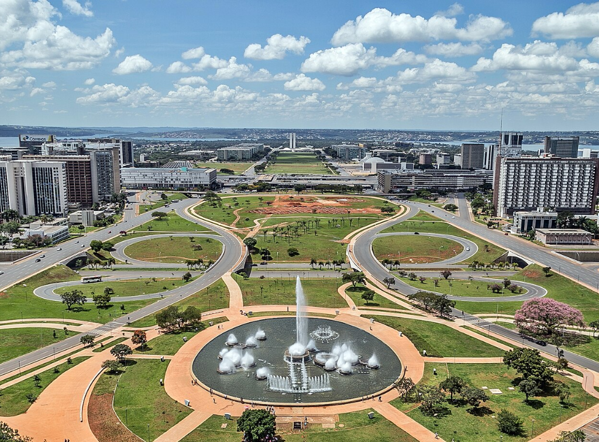

Brasília é a capital do Brasil e uma das cidades mais marcantes do país por sua história e arquitetura única. Ela foi inaugurada em 21 de abril de 1960, durante o governo do presidente Juscelino Kubitschek, com o objetivo de promover a interiorização do desenvolvimento brasileiro — ou seja, levar progresso para o centro do país, longe do litoral. A cidade foi planejada do zero, algo raro no mundo. O urbanista Lúcio Costa criou o plano piloto, que tem o formato semelhante a um avião (ou pássaro), enquanto o arquiteto Oscar Niemeyer projetou muitos dos edifícios principais, como o Congresso Nacional, a Catedral de Brasília e o Palácio da Alvorada. O paisagismo ficou por conta de Burle Marx.
